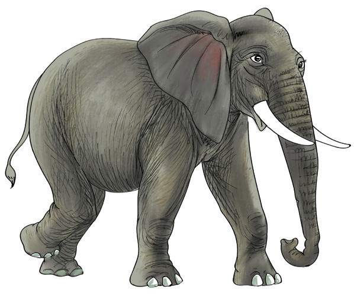

Tamka sauti za herufi zinazounda silabi na maneno.
Mifano
Sauti za herufi zinazounda silabi li ni l i. Sauti za herufi zinazounda neno lima ni l i m a. Sauti za herufi zinazounda neno lala ni l a l a. Sauti za herufi zinazounda neno kule ni k u l e.
4. Soma silabi za maneno haya.
li
lia
lo
loa
le
lea
la
lao
lu
leo
5. Soma maneno haya kwa haraka.
lala
kula
lenu
kulia
kale
lako
kule
lalia
lima
nile
liko
kelele
6. Tunga sentensi kwa kutumia maneno haya.
lala
lima
leo
kula
kelele
lenu
lalia
kulia
Mfano
Leila anapiga kelele.
Sauti ya herufi t
Hii ni picha ya nini?

1. Tamka sauti ya mwanzo ya neno ulilolitaja.
2. Taja maneno mengine yanayoanza na sauti hiyo.